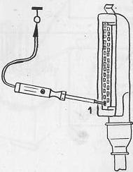

No triggering impulse from coil terminal 1
Pull multi-pin connector off control unit.
Connect test light between terminal 1 and vehicle ground.
Operate starter
Test light should flicker.

Test light flickers
No flicker.